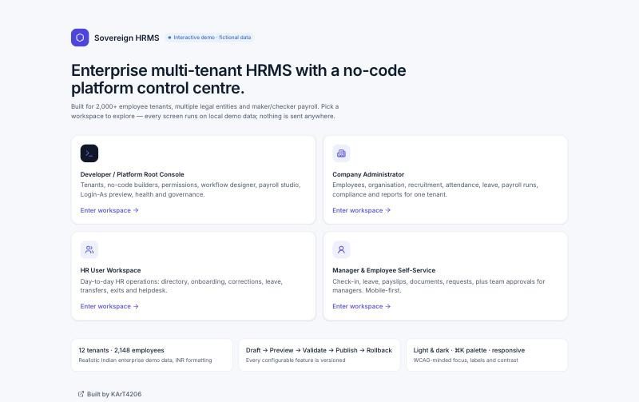
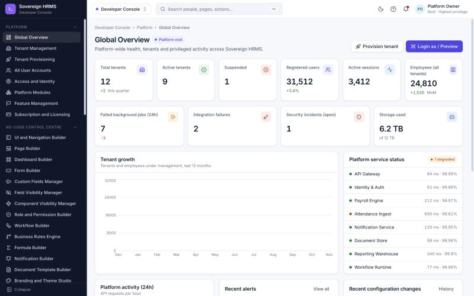
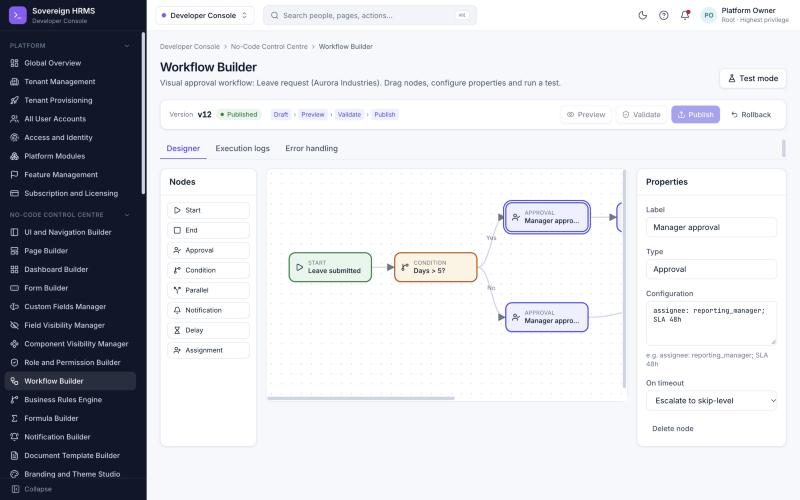
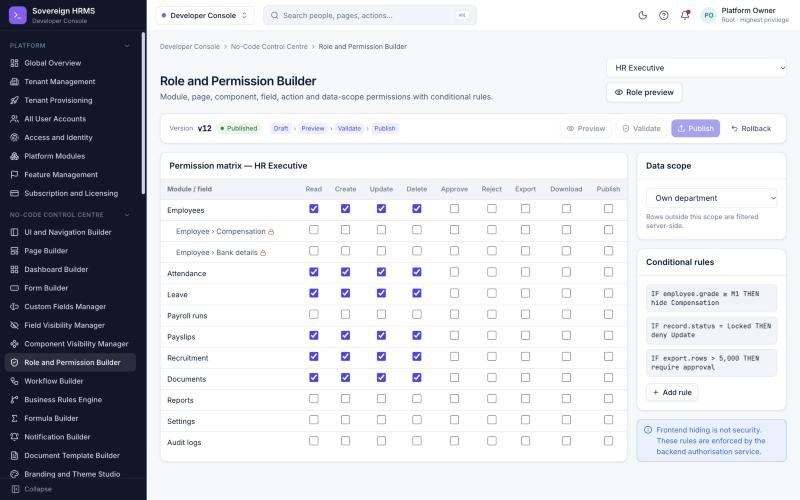
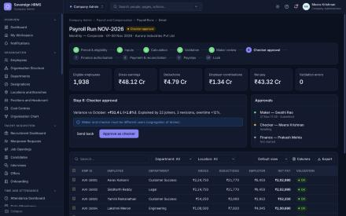
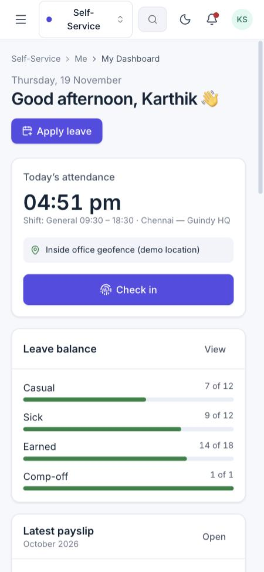

Sovereign HRMS
Enterprise multi-tenant HRMS with a no-code Developer Control Centre — four connected workspaces, maker/checker payroll, visual workflow and permission builders, audited Login-As preview, and mobile self-service. Interactive demo with fictional data.
Open live demoRead the overview




